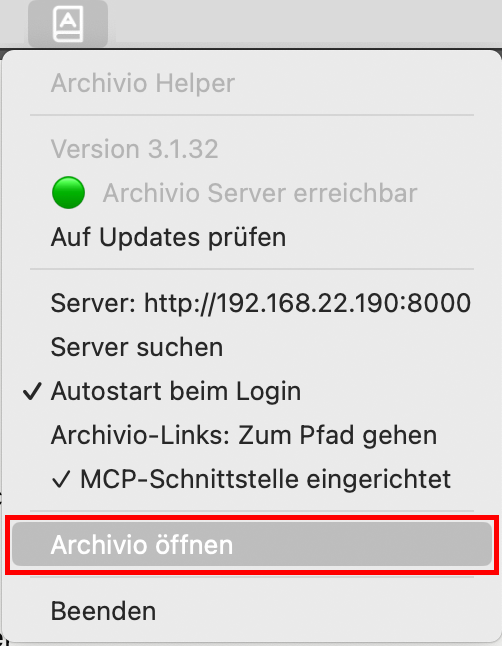

Installation
Archivio besteht aus zwei Teilen: dem Server, der auf einem fixen Mac (z. B. iMac) läuft, und dem optionalen Helper auf jedem Mitarbeiter-Mac.
Mit der Installation gelten der Haftungsausschluss und das Merkblatt zum Umgang mit euren Daten.
Schritt 1 — Archivio Server installieren
- Doppelklick auf die heruntergeladene
.pkg-Datei — der Installer öffnet sich. - Auf Fortfahren und dann Installieren klicken.
- Mac-Passwort eingeben und auf Software installieren klicken.
- Zwei Berechtigungsdialoge erscheinen — jeweils Erlauben klicken.
- „Die Installation war erfolgreich" — auf Schließen klicken.


Berechtigungsdialoge beim ersten Start
Beim ersten Öffnen und beim ersten Scan erscheinen zwei Berechtigungsdialoge — jeweils Erlauben klicken.


Erster Start
Archivio Server ist eine reine Menüleisten-App — es öffnet sich kein Fenster und kein Dock-Symbol beim Start. Die Weboberfläche selbst über die Menüleiste aufrufen:
- Das Programm „Archivio Server" starten (Programme-Ordner oder Spotlight).
- Oben rechts in der Menüleiste erscheint das Archivio-Symbol — anklicken und „Archivio öffnen" wählen.

Die Weboberfläche ist ausserdem direkt unter http://<Server-IP>:8000 erreichbar — z. B. http://192.168.1.10:8000, auch von jedem anderen Mac im selben Netzwerk.
Beim ersten Öffnen ist die Datenbank leer. Zuerst ein Projekt anlegen und den Ordner auf dem Datei-Server verknüpfen, dann einen ersten Scan starten.